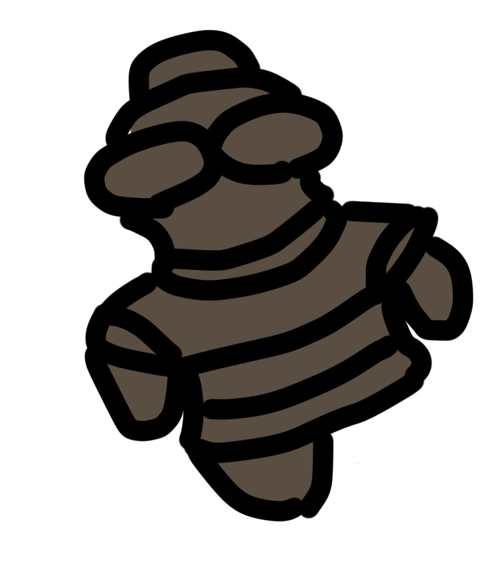
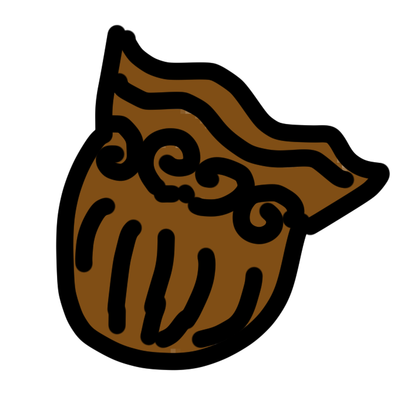
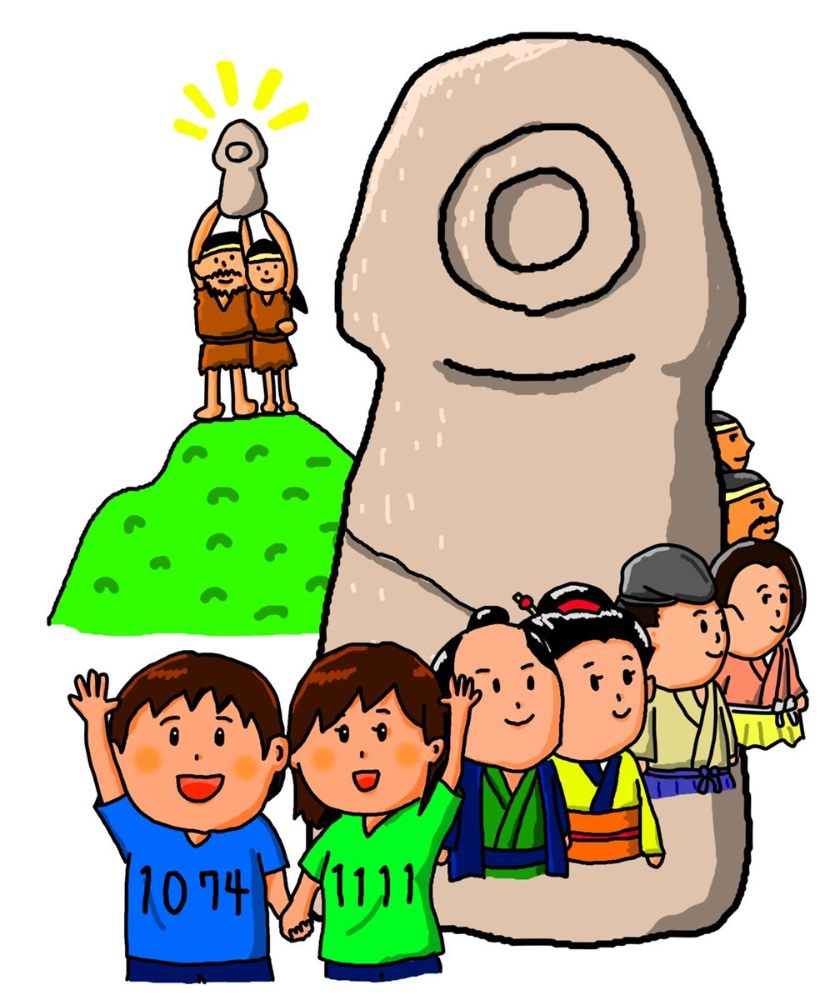

2026.11.01 — 11.30 ／ 石棒強化月間 2026
AIに愛はない。
石棒に愛♥はある。
4000年前。
縄文人は、ただ石を削っていた。
理由はわからない。それでも、削り続けた。
これを愛と呼ばずに、なんと呼ぶ。
SCROLL


4000年前。
縄文人は、ただ石を削っていた。
理由はわからない。それでも、削り続けた。
これを愛と呼ばずに、なんと呼ぶ。
計算も、要約も、絵を描くことも。たいていのことは、もうAIのほうが速い。では、人間に残るものは何だろう。
たぶん、意味のないことを、意味がないまま続けてしまう力だ。1,074本の石棒は、その証拠みたいに飛騨市の収蔵庫で眠っている。

4000年、
誰もやめなかった。
主催は石棒クラブ。年間30日ほどしか開かない小さな博物館「飛騨みやがわ考古民俗館」を舞台に、2019年から石棒で遊び続けている任意団体です。
企画の詳細と申し込みはPeatixから。石棒クラブをフォローしておくと、公開されたときに通知が届きます。
Peatixで企画を見る